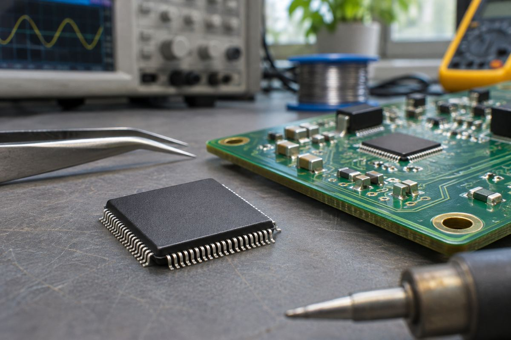

전자기기 / EXPLAINED
AMD 버설 TR 공개, 칩 뒷면 물리 공격 방어 기능 통합
세 모델의 샘플은 2027년 하반기, 생산은 2028년 상반기가 목표다.

AMD는 11월 12일 물리적 변조 저항 기능을 결합한 버설 TR 제품군을 발표했다. 버설 AI 엣지 2세대를 기반으로 한 세 모델로, 실리콘 뒷면을 겨냥한 특정 물리 공격에 대한 보호 기능을 칩 안에 통합했다. 첫 샘플은 2027년 하반기, 생산은 2028년 상반기로 예상한다고 밝혔다. 지금 개발에 쓸 수 있다는 설명은 대응하는 표준 제품을 가리킨다.
AMD는 CPU와 GPU뿐 아니라 회로 구성을 프로그램할 수 있는 적응형 칩도 공급한다. 버설에는 명령을 수행하는 Arm CPU, 일부 연산을 병렬로 처리하는 AI 엔진, 사용자가 설계한 회로를 구현하는 프로그래머블 로직이 함께 들어간다. 이종 연산이란 역할이 다른 장치를 같은 시스템에 두고, 작업에 맞는 곳에 계산을 보내는 방식이다. 티알 제품은 이런 연산 기능을 유지하면서 보안 설계가 필요한 산업 장비나 네트워크 장치 등에 쓰는 구상이다.
칩에 물리적으로 접근할 수 있는 상황에서는 소프트웨어 업데이트만으로 모든 공격을 막기 어렵다. 예를 들어 전원 레일은 회로 블록에 특정 전압을 공급하는 전기 경로인데, 순간적으로 전압이 정상 범위를 벗어나면 연산이나 검증이 잘못 진행될 수 있다. 이런 짧은 이상을 글리치라고 부른다. AMD는 두 전원 레일에서 동시에 생기는 글리치까지 감지 범위를 넓혔다고 설명한다. 공개된 자료만으로 모든 접근 방식이 감지된다고 판단할 수는 없다.
보안 기능에는 ML-DSA와 SLH-DSA 서명 가속, 여러 서명 알고리즘을 이용할 수 있는 부팅 흐름이 포함된다. 전자서명은 펌웨어가 신뢰할 수 있는 곳에서 왔고 바뀌지 않았는지 검증하는 수단이다. 부팅 과정에서 이를 쓰려면 장치에 올바른 검증 키를 넣고 업데이트까지 관리해야 한다. 칩이 알고리즘을 지원한다고 완성 장치 전체가 같은 위협에 대응하도록 검증됐다는 뜻은 아니다.
회사는 제품군에서 최대 369 INT8 TOPS를 제시한다. 이는 초당 369조 회의 8비트 정수 연산을 나타내는 사양이며, 특정 프로그램의 실제 실행 속도는 연산 구성과 메모리 전송에 따라 달라진다. 2VE3358TR, 2VE3558TR, 2VE3858TR마다 대응하는 표준 부품의 장착 형상이 같다고 AMD는 설명했다. 편집부는 이를 기판 개발을 먼저 시작할 수 있는 선택으로 보지만, 변경 후 보안 효과는 완성 기기에서 별도로 확인해야 한다고 본다.
개발 일정에서 기존 표준품을 쓰는 단계에는 입력과 출력이 맞는지, 필요한 처리량을 얻는지 시험하는 일이 포함된다. 그러나 물리 방어 기능을 검증하려면 실제 보호 기능이 들어간 부품이 필요하다. 편집부는 기판과 응용 코드 시험을 앞당길 수 있는 부분과 TR 샘플을 기다려야 하는 시험을 나눠 계획하는 것이 합리적이라고 본다. 동일한 장착 형상 자체는 시험을 통과했다는 결과가 아니다.
가격과 국가별 공급, 실제 적용 대상과 검증 조건의 세부는 이번 발표에 없다. 공급 계획 역시 샘플과 양산으로 나뉜다. 개발팀에는 표준 칩으로 설계를 시작할 수 있는 일정과 변조 저항 부품을 받을 수 있는 일정이 각각 중요하다. 공격 범위는 회사가 지정한 위협 모델과 제품 문서를 기준으로 판단해야 한다.